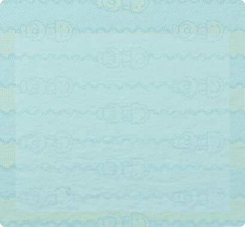

Update Notes
Ver.3.0.0
Version 3.0 is Here!
Study Animations complete (Maths, History, English, Sleeping)
New greeting system (depending on total steps)
Bugs related with eat animations FIXED
New Animations availables at 4500, 45.000 or 450.000 Steps:
Study Sleeping
,
Study English
,
Computer
Next steps:
Walking Animations
Make the web PWA (To include mobile pedometer)
Develop the web as a gadget for SmartWatch (pending research)
OK
SAVE ANIMATION
PRINT SELECTED
EDIT ANIM
ERASER
START ANIM
SHOW HOR GRID
SHOW VER GRID

88888
shake
right
left
top
bottom